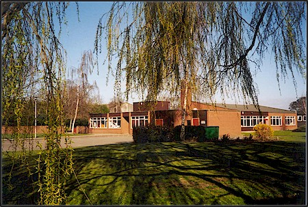
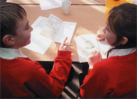
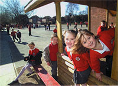
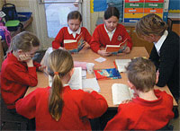

Church Fenton School
Kirk Fenton CE Primary School serves the villages of Church Fenton, Biggin, Little Fenton, Ulleskelf and Kirby Wharfe. The school is a Voluntary Controlled Primary School for children between four and eleven years of age.

The school is at the heart of the community and is proud of the strong links established in both Church Fenton and the surrounding villages that make up the catchment area. The children make many visits into the local environment and community as well as other areas of the country to enrich the work undertaken in school.
The school is set well back from the road and situated in spacious grounds with a large well equipped playground, sports field and separate play area for the foundation stage pupils.



There are six classrooms, a large hall, a nursery, a well stocked library and a smart resource room for small group teaching. School meals are served on the premises and there is a before and after school club on the school site.
There are excellent Information and Communication Technology (ICT) facilities, with every classroom being equipped with an interactive white board and computers to help support the pupils work across the curriculum.
Music tuition for a wide range of instruments is available through North Yorkshire County Council and the school is well known for its high standards of performing arts, with the children being encouraged to take part in a diverse program of dance, music and drama.
Kirk Fenton School is a Controlled Church of England School, which maintains close links with the Church and local community. Parents considering sending their children to this school are very welcome to visit beforehand, however, they should preferably make a prior appointment with the Headteacher.
Contacting the School
For further information regarding Church Fenton School, you are advised to contact them directly or visit their website. Full details are given below:
Headteacher: Mrs Karen Williams
Kirk Fenton Parochial Primary School
Main Street, Church Fenton
Tadcaster
North Yorkshire, LS24 9RF
Telephone: 01937 557228
Website: www.kirkfenton.n-yorks.sch.uk